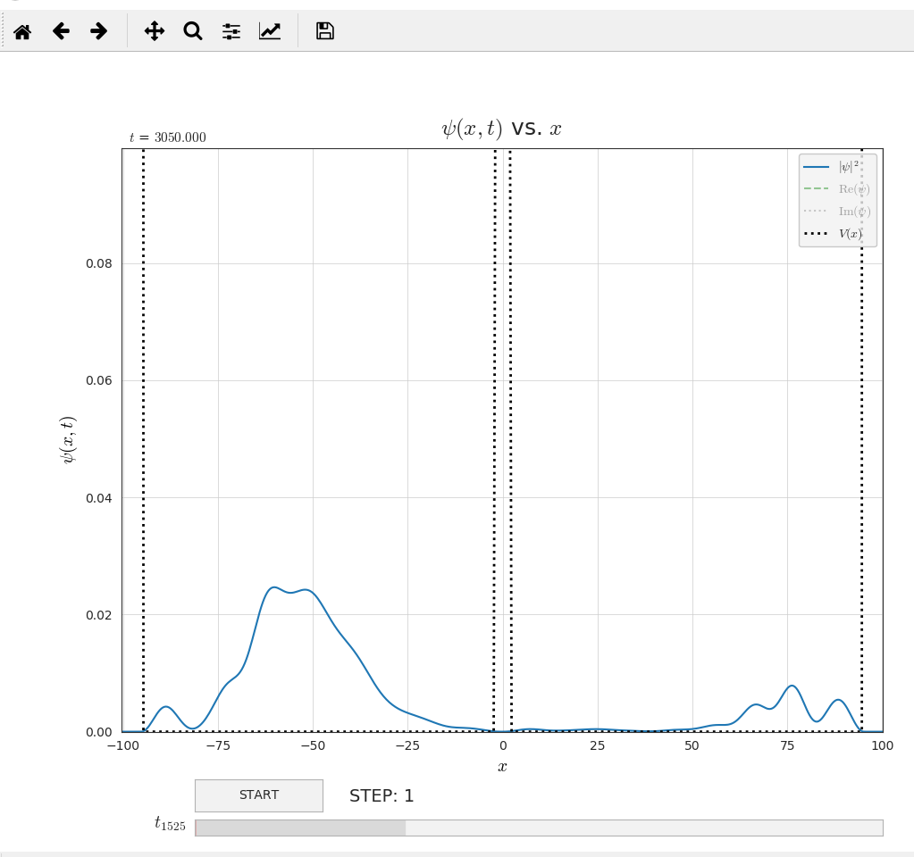

Entry 25¶
Tunneling Effect on Square Potential (just for example)¶
Irfan Taufiq Azhari
In the research is not rarely needed adequate data visualization, which then can be researched qualitatively and quantitatively. One of software that can present a decent visualization to display in a science publication is the matplotlib programming package, specifically matplotlib.pyplot. Despite the various features and conveniences found in matplotlib, it takes skill to produce the visuals that are really expected. In fact, not all researchers who have enough time and skills in that area.
The purpose of this module is to facilitate other researchers to perform data visualization without the need to think about the parameters that are not significant in the study. It is then that researchers can focus on research, not how to display the visualization of their data. Authors do not need to write nor formulate long code listings.
For example, let me present some simple examples to use this module (included in the Overview and Examples.pdf document). A more advanced example is also presented in the form of a quantum tunneling effect based on a one dimensional linear Schrodinger equation on a square potential with an initial function in the form of a normalized Gaussian function. In this example we show the ability of this module to display interactive data visualization in the form of simulation with just a few lines of code. Users can choose which data is displayed in the simulation by clicking on the legend item’s handle. Panning and zooming can also be done easily using the appropriate GUI backend used (recommended using Qt5Agg) in matplotlib. Also included is a slider to display data at a certain point of time or position. Animation is executed by clicking on the START button, and pause or stop on the same button.
Just for information, currently this module isn’t a proper Python module/package yet, so some error will be encountered. Even validation of inputs aren’t properly handled. The purpose of this module is just to showcase what can be done in future with this soon to be Python package. I hope this module will be useful.